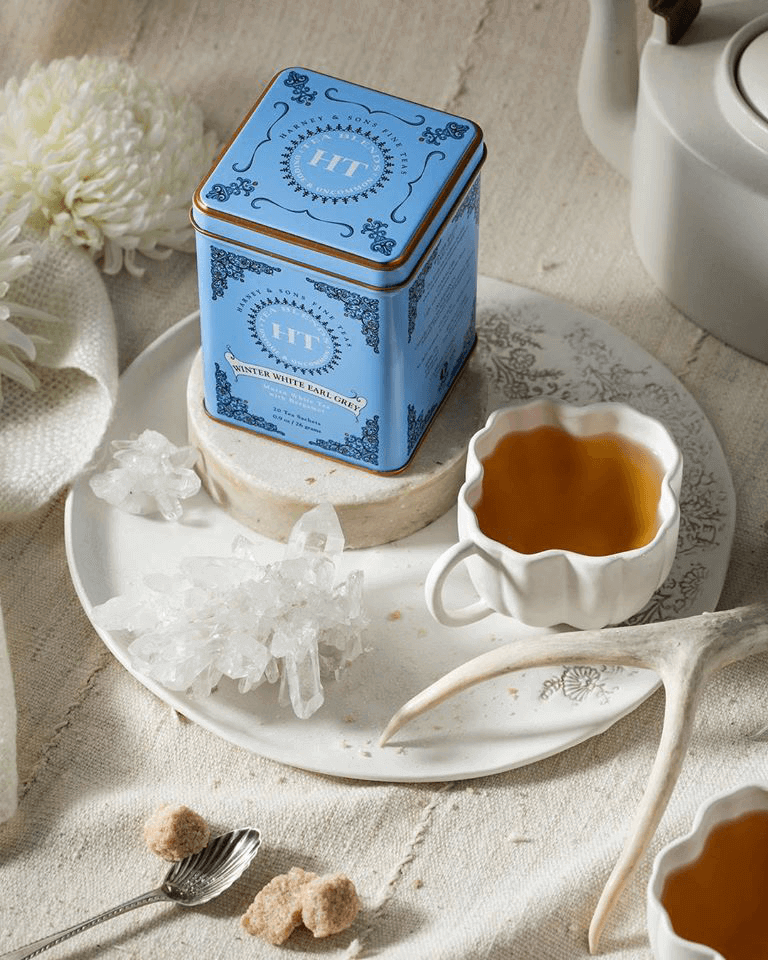

Winter White Earl Gray
A perennial favorite, our Winter White Earl Grey gives an evergreen classic a deliciously light twist. Beautiful Chinese Mutan White tea forms the base of this blend, providing light floral elements and a delicately grassy note. Natural lemony bergamot oil gives deep, multifaceted citrus qualities to the blend. A pleasant blend perfect for enjoying whenever the wish for something a bit different strikes.
Learn more
